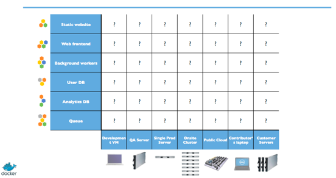
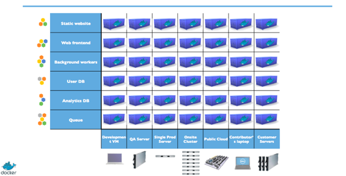
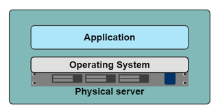
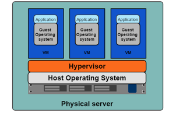
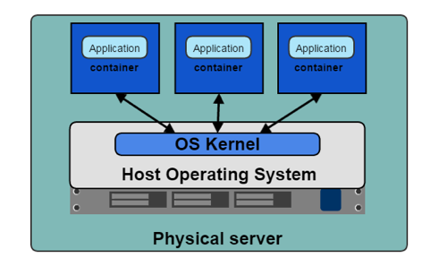
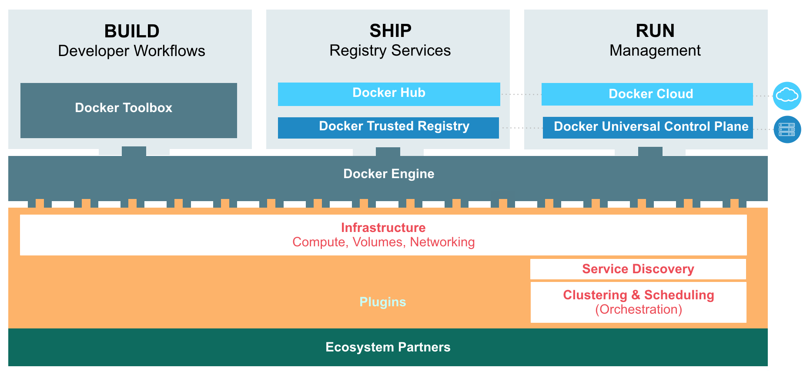
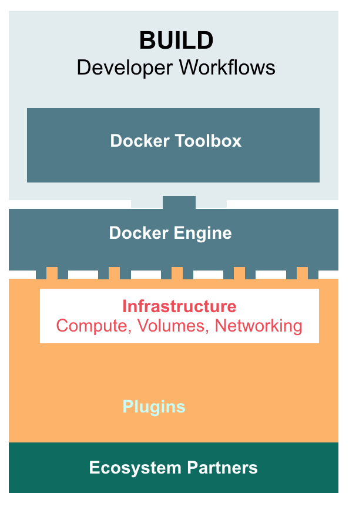
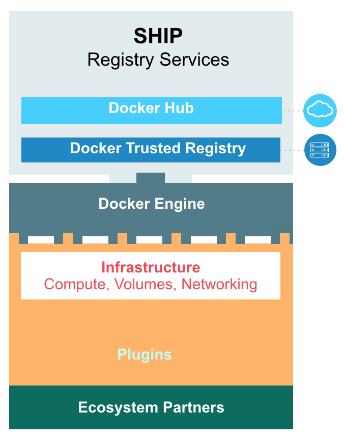
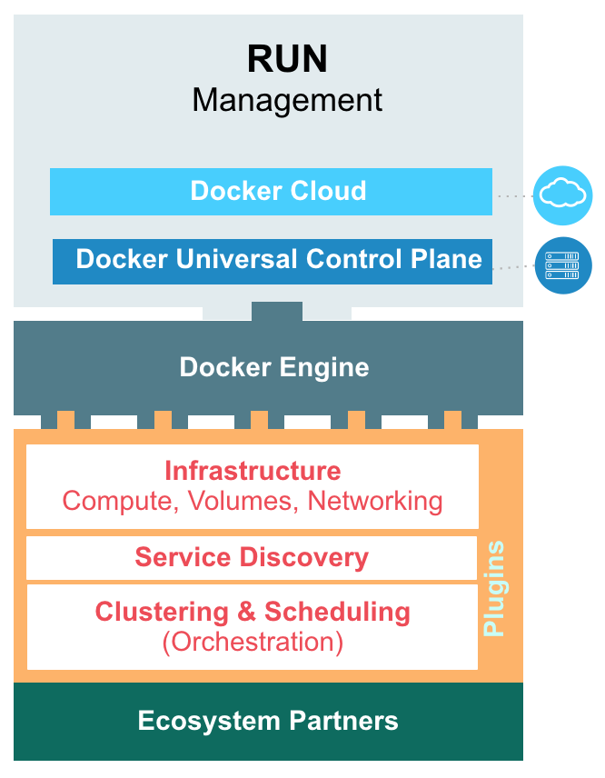
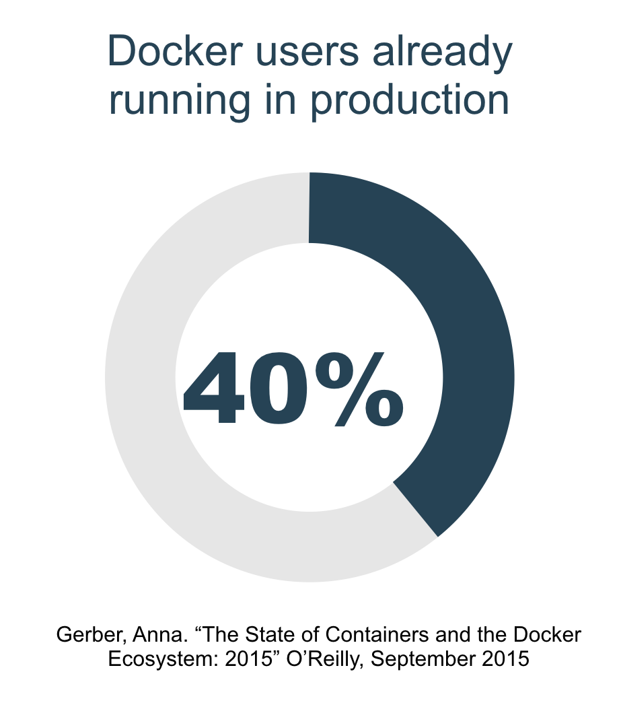

Encapsulation eliminates friction across infrastructure, and standardization facilitates scale.
Deployment Nightmare

Each component needs to perform reliably and consistently in each environment; deployment nightmare scales like n2.
Any App, Anywhere

A tool that abstracts away differences between deployment environments means we can run any app, anywhere.
Encapsulation I: Physical Servers
in the dark ages

One application, one physical server
Encapsulation I: Physical Servers
limits of physical encapsulation
Slow deployment
Huge costs
Provisioning speed limited by physical logistics
Difficult to scale
Dificult to migrate
Vendor lock-in
Encapsulation II: VMs

Multiple apps on one server
Elastic, real time provisioning
Scalable pay-per-use cloud models viable
Encapsulation II: VMs
VM Limitations
VMs require CPU & memory allocation
Massive overhead from guest OS
Encapsulation III: Containers

Containers leverage kernel features to create extremely light-weight encapsulation:
Kernel namespaces
Network namespaces
Linux containers
cgroups & security tools
Results in faster spool-up and denser servers
The most basic thing Docker provides is a
framework for service encapsulation
But what are the implications of this for developers, ops, and orgs?
Distributed Application Architecture
Encapsulation supercharges:
Monolith Densification
Service-Based Architecture
Devops
But all three of these things are served by an added layer of abstraction that simplifies the coordination of encapsulated services. Distributed Application Architecture is that abstraction.
Dockerized Distributed Application Architecture will help you develop for
Services, not processes
and deploy on
Networks, not nodes.
Docker helps create a
virtuous circle between dev and ops
via service-oriented registry, RBAC, and control planes - thus modernizing the entire software supply chain.
Docker helps build, ship and run apps by:
Making containerization of services easy
Making service orchestration across processes and machines easy
Eliminating friction between development and deployment
Docker provides a suite of enterprise-grade tools that perform all of the above.
The Docker Platform

Developer tools to build containerized apps

Docker for Mac / PC sets up a dev environment in a few clicks:
Docker Engine runs locally in a single VM
Docker Compose orchestrates multiple containers on one machine
Docker Swarm orchestrates multiple machines, and schedules containers across them
Docker Client provides a CLI for Engine
Kitematic provides a free GUI
Secure Exchange of Images between Dev and Ops

Image Registry stores all your Docker images in the cloud or in your network
Control access and permissions by user or org
Content trust to sign trusted images
Web UI for convenient repo management
Integrate CI/CD systems to automate workflows
Trusted Registry
Security Scanning
LDAP/AD integration
Flexible storage support
User audit logs
Garbage collection
Dockerhub
Security Scanning
Webhooks
Autobuilds
Official Images
Deploy & Manage Dockerized Apps Anywhere

Management Console for on-prem, cloud, and hybrid deployments
Deploy & manage services & multi-node networks
Image, network and service management all in one place
Registry integration to manage roles, users and teams
System metrics like monitoring, logs and history.
Universal Control Plane
LDAP integration & RBAC
High availability mode
TLS encryption
Docker Cloud
Secure link to IaaS clouds
Provision hosts and clusters
About Docker Inc.
Commercial Docker Solutions
Addresses all concerns in the enterprise software supply chain: security, access, ease-of-use
Official providers of commercial tech support
Docker Project Sponsor
Maintainer and primary contributor to the Docker open source project
1B+ image downloads
1500+ contributors
200k+ Dockerized apps

Docker Training
Enablement for all these products
Deep dives on special topics like networking, security and architecture